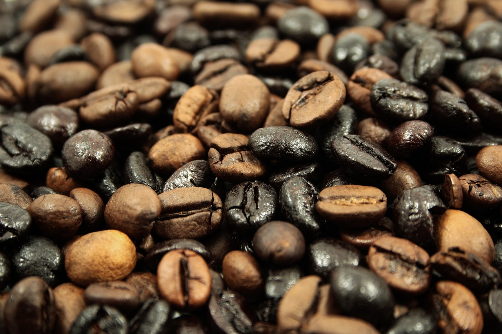
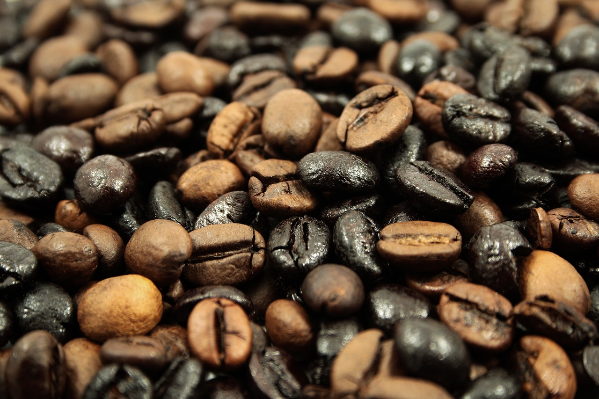

Kawowy Spichlerz
Kawa z serca Poznania
ul. Święty Marcin 10 61-803 Poznań
O Nas
"Kawowy Spichlerz" to kultowa kawiarnia w centrum Poznania, gdzie zapach świeżej kawy i vintage'owy klimat tworzą niepowtarzalną atmosferę. Wnętrze z drewnianymi regałami pełnymi porcelanowych filiżanek zaprasza do delektowania się chwilą i odkrywania tajemnic złotego dzbanka do kawy, mającego niezwykłą moc spełniania marzeń.

Kawiarnia "Kawowy Spichlerz" to miejsce, które organizuje niezapomniane przyjęcia i warsztaty parzenia kawy. Zapewniamy doskonałą oprawę dla różnorodnych wydarzeń, takich jak urodziny, imieniny czy zaręczyny, które mogą być celebrowane w naszej kawiarni w wyjątkowej atmosferze.
Menu
Napoje kawowe
- Espresso
- Cappuccino
- Latte macchiato
- Mocha
- Americano
- Flat White
- Kawa z aeropressu
- Cold Brew
Napoje specjalne
- Kawowy Shake - klasyczny shake z dodatkiem espresso
- Kawowy koktajl - mieszanka kawy, mleka, syropu i lodów
- Affogato - kulka lodów zalewana gorącym espresso
Herbaty
- Czarna herbata
- Zielona herbata
- Herbata owocowa
- Herbata ziołowa
Wina
- Czerwone wino - wybór z lokalnych i międzynarodowych win czerwonych
- Białe wino - różnorodność białych win o różnym smaku i pochodzeniu
- Różowe wino - lekkie i orzeźwiające wina różowe
Prosecco
- Prosecco - włoskie musujące wino, idealne do celebracji i towarzyskich spotkań
Desery i przekąski
- Ciasto dnia
- Brownie czekoladowe
- Kanapki z hummusem i warzywami
- Sałatka owocowa
Historia
1. Początki
"Kawowy Spichlerz" powstał w 2005 roku w samym sercu Poznania. Była to mała kawiarnia prowadzona przez pasjonatów kawy, którzy pragnęli stworzyć miejsce, gdzie miłośnicy tego aromatycznego napoju mogliby się spotykać i cieszyć wyjątkowym smakiem.
2. Rozkwit
Z czasem popularność "Kawowego Spichlerza" rosła, a kawiarnia stała się prawdziwym mekką dla miłośników kawy w Poznaniu. Wnętrze zyskało unikalny vintage'owy styl, a aromat świeżo parzonej kawy unosił się w powietrzu, zachęcając do chwil relaksu i delektowania się wyjątkowym napojem.
3. Innowacje
"Kawowy Spichlerz" nieustannie się rozwijał i wprowadzał innowacje. Kawiarnia zaczęła organizować warsztaty kawowe, na których goście mogli dowiedzieć się więcej na temat różnych metod parzenia kawy i cieszyć się smakiem najwyższej jakości ziaren. Oferowała również wieczory tematyczne, podczas których eksperci z dziedziny kawy dzielili się swoją wiedzą i pasją.
4. Dzisiejszy sukces
Dziś "Kawowy Spichlerz" jest nieodłączną częścią krajobrazu kawowego w Poznaniu. Cieszy się renomą jako miejsce, gdzie można skosztować doskonałej jakości kawy, delektować się pysznymi deserami i spotkać się z innymi miłośnikami tego napoju. Kawiarnia kontynuuje swoją tradycję serwowania wyjątkowych kaw i zapewnia gościom niezapomniane doświadczenia kawowe.
"Kawowy Spichlerz to moje ulubione miejsce na spędzanie popołudniowych chwil. Ich kawa jest zawsze doskonała, a obsługa, szczególnie pani Anna Nowak, jest niezwykle przyjazna. Wnętrze ma wyjątkowy urok, który sprawia, że czuję się jak w magicznym świecie kawy. Polecam każdemu miłośnikowi tego napoju!"
- Jan Kowalski
"Nie mogę się doczekać kolejnej wizyty w Kawowym Spichlerzu! Ich kawa jest naprawdę rewelacyjna, zawsze świeżo palona i idealnie przygotowana. Dodatkowo, atmosfera jest niesamowita - ciepła i przytulna. To miejsce sprawia, że każda kawa smakuje jeszcze lepiej! Serdeczne podziękowania dla pana Michała Kowalskiego za doskonałą obsługę!"
- Maria Nowak
"Kawowy Spichlerz to oaza spokoju w środku miasta. Uwielbiam tu przyjść, usiąść wygodnie i delektować się aromatyczną kawą. Mają szeroki wybór napojów, a także pyszne desery. Obsługa, zwłaszcza pani Karolina Wiśniewska, zawsze uśmiechnięta i profesjonalna. To miejsce, gdzie można odpocząć i zrelaksować się w kawowym klimacie."
- Adam Nowak
Galeria
 



Skontaktuj się z nami
- E-mail: kontakt@kawowyspichlerz.pl
- Telefon: +48 123 456 789
Odwiedź nas
Adres:
ul. Święty Marcin 10 61-803 Poznań
Godziny otwarcia:
Codziennie: 10.00-21.00